图的本体是 architecture-2026-10-01-as-built.svg（唯一可编辑源）；同目录
.png 是其渲染件（3200×2000）。本页只承载校验记录。
本页为 2026-10-01「两条路」时代的快照，已停止维护。现行为见
architecture-2026-10-02-as-built.html：入口在 443，:9988/:8899
与海外边缘路径均已删除，勿照本页排障。

| 原图陈述 | 判定 | 订正 / 依据 |
|---|---|---|
公网入口"仅开放 443"；<instance-id>.mrrc.vlsc.net | 过时 | 现网开放 8899/9988/8989（境内备案前 443 不可用，R-H13）；身份为呼号（AD-H15）；补海外边缘 443 退化路与 Portal 入口。SDD/12 §12.8、deploy/README |
| 控制面六盒并列（Registry/Ticket/Lease/OTA/Obs） | 未区分 | Portal 呼号注册已实现且有公网入口（§12.9）；Registry as-built 为文件注册表；其余为阶段 2/3 —— 本版以虚线框与阶段标签区分 |
| Access/Tunnel Gateway、WSS/mTLS、RX Relay | 目标态 | as-built = nginx 通配 vhost（含上游证书校验 NFR-H021）+ frps 共享 token；RX Relay 未实现（AD-H12 条件触发） |
| Redis/RDS/OSS/SLS 存储行 | 目标态 | as-built 为文件（instances.tsv / portal.json / 追加式审计）+ nginx 日志（只记路径）；目标态存储移至虚线区 |
| 用户链路"登录 Portal → 签发 ticket → 访问" | 过时 | as-built 为主/监听口令直接登录（host-only Cookie，凭据不进 URL/日志，AD-H07/AD-H09）；Portal 只管呼号注册；ticket 链路标为虚线目标态 |
| 每实例一机一证；operator 单写租约 | 阶段 2 | as-built 共享 token；发射权由实例侧仲裁（mrrc_modern PTT 控制面仲裁） |
| 七层 PTT 释放为最终防线 | 数字旧 | 实例侧 Layer 0–8 + hub 远程会话活性层（I-H6，mrrc_modern V2.62/V2.63 已落地） |
| 容量基线 200/500/1000/5000/200 Mbps | 规划值 | 未压测（I-H1/I-H2 待采集），本版显式标注"规划值，未压测" |
Listener /listen 多读；实例主动出站 | 相符 | 与现网一致：Listener 服务端强制只读（4003/403）；客户侧零入站（SC-H1） |
| （缺失）证书服务、上游证书校验、404 不回退 | 补入 | DNS-01 通配每日续期（NFR-H030）；proxy_ssl_verify on（NFR-H021）；未知呼号 404 不回退（NFR-H022） |